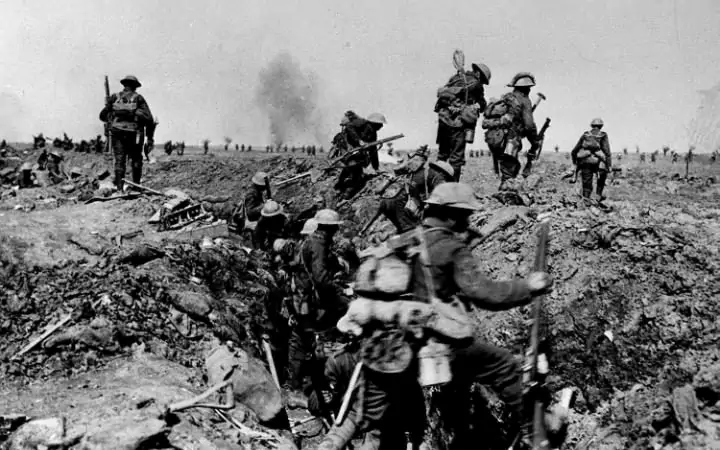
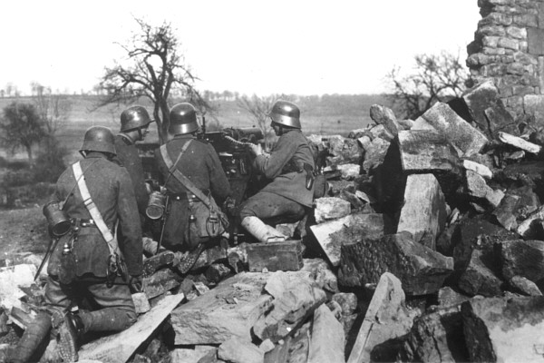

 Russia’s took massive losses at the start of the war, but had some successes against the Austro-Hungarians. Germany did change its plan and started to aid its weaker ally. By the end of 1914 The Eastern Front now had a larger central force to counter attack the Russian Army. Under equipped and slowly outnumbered the Russians were defeated and forced to retreat out of Poland by the Summer of 1915. On their retreat they did something horrible, killing ethnic minorities that supported Germany on their retreat, and by the end of the year a new frontline in the Eastern front was created. This front was closer to modern day Ukraine and Belarus. The German military would continue fighting on the Eastern Front, which did put strain on its Western Front. The inclusion of the Ottoman Empire to the central powers.
The land of Poland during World War 1 was controlled by Germany, Austria-Hungary and Russia. For a small period during the war a puppet government was put in place from 1916 to 1918. Poland is home to various ethnic groups and in the past has been home to various rule. It would only have a short period of independence after World War 1 as it would once be invaded by its previous rulers of Germany and Russia.